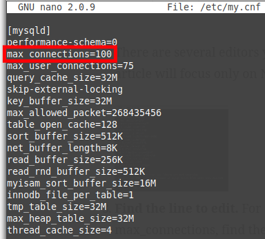
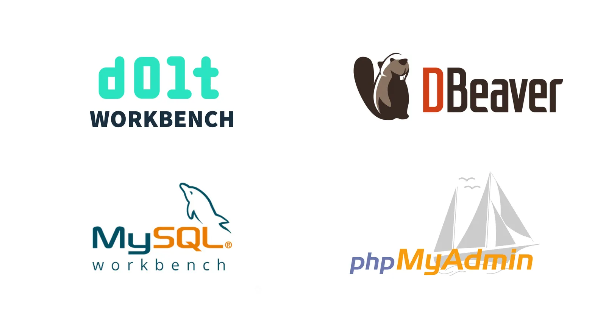
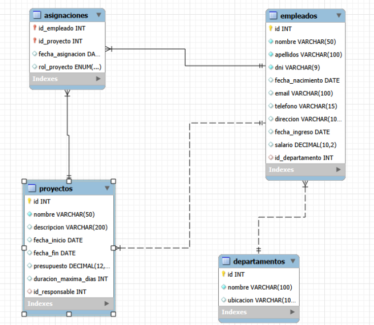

Objetivos de la unidad
- Comprender qué es MySQL y para qué se utiliza.
- Instalar y configurar MySQL en diferentes sistemas operativos.
- Utilizar sentencias DDL para crear y modificar bases de datos.
- Definir tablas, tipos de datos y restricciones.
- Aplicar claves primarias y foráneas.
- Optimizar el rendimiento mediante índices.
- Gestionar usuarios, privilegios y seguridad.
¿Qué es MySQL?
MySQL es un Sistema Gestor de Bases de Datos Relacional (RDBMS) de código abierto que utiliza SQL para almacenar y gestionar información.
- Permite operaciones CRUD (Crear, Leer, Actualizar y Borrar).
- Soporta transacciones.
- Permite definir claves primarias y foráneas.
- Garantiza la integridad referencial.
- Se utiliza en aplicaciones web como WordPress.
Instalación de MySQL en Windows
- Descargar MySQL Installer: https://dev.mysql.com/downloads/installer/
- Seguir los pasos de instalación.
- Configurar puerto 3306.
- Configurar contraseña del usuario root.
- Finalizar instalación.
Video demostrativo de instalación
En el terminal ejecutamos el siguiente comando:
mysql -u root -p # Abre una sesión de MySQL con el usuario root y solicita su contraseñaSi accedemos a MySQL la instalación ha sido correcta.
Instalación en Linux Ubuntu
sudo apt-get update # Actualiza la lista de paquetes disponibles
sudo apt-get install mysql-server # Instala el servidor MySQL
sudo mysql_secure_installation # Ejecuta el asistente de configuración segura
sudo mysql -u root -p # Se conecta a MySQL como administrador y solicita la contraseñamysql_secure_installation mejora la seguridad eliminando usuarios anónimos y configuraciones inseguras.
Instalación en macOS
brew install mysql # Instala MySQL mediante Homebrew
brew services start mysql # Inicia MySQL como servicio
mysql_secure_installation # Ejecuta el asistente de configuración segura
mysql -u root -p # Se conecta a MySQL y solicita la contraseñaHomebrew facilita la instalación y gestión de servicios en macOS.
Configuración de MySQL
El archivo de configuración my.cnf (Linux/macOS) o my.ini (Windows) permite ajustar parámetros del servidor.
- max_connections: número máximo de usuarios conectados.
- key_buffer_size: memoria utilizada por índices.
- innodb_buffer_pool_size: memoria para tablas InnoDB.
La configuración influye directamente en el rendimiento del servidor.


Es recomendable revisar y ajustar estos parámetros según las necesidades de la aplicación y la carga esperada.
La configuración influye directamente en el rendimiento del servidor.
Herramientas para trabajar con MySQL
Existen varias herramientas para interactuar con MySQL, cada una con sus ventajas y desventajas.
- MySQL Workbench: interfaz gráfica, ideal para principiantes.
- DBeaver: herramienta multiplataforma, ideal para desarrolladores avanzados.
- Línea de comandos (CLI): rápida y potente, permite automatización mediante scripts.
- phpMyAdmin: acceso mediante navegador, habitual en entornos web. No requiere instalación adicional.

Lenguaje SQL
SQL (Structured Query Language) es el lenguaje estándar para gestionar bases de datos relacionales.
- DDL (Data Definition Language): define y modifica la estructura de la base de datos.
- DML (Data Manipulation Language): manipula los datos almacenados en la base de datos.
- DCL (Data Control Language): controla los permisos y accesos de los usuarios.
Sentencias DDL (Data Definition Language)
CREATE: crea bases de datos, tablas, índices y otros objetos.ALTER: modifica la estructura de una base de datos o tabla existente.DROP: elimina bases de datos, tablas o índices.TRUNCATE: borra todos los registros de una tabla sin eliminar su estructura.
Ejemplo: crear una base de datos llamada empresa, añadir una tabla
empleados, modificarla para añadir un campo y finalmente eliminarla.
Crear la base de datos y la tabla:
CREATE DATABASE empresa; -- Crea la base de datos de la empresa
USE empresa; -- Selecciona empresa para las siguientes operaciones
CREATE TABLE empleados ( -- Crea la tabla que almacenará a los empleados
id INT PRIMARY KEY AUTO_INCREMENT, -- Identificador único generado automáticamente
nombre VARCHAR(50) NOT NULL, -- Nombre obligatorio de hasta 50 caracteres
email VARCHAR(100) UNIQUE, -- Correo electrónico que no se puede repetir
telefono VARCHAR(15), -- Número de teléfono del empleado
fecha_alta DATE DEFAULT CURRENT_DATE -- Fecha de alta, por defecto la fecha actual
); -- Finaliza la definición de la tablaModificar la tabla: añadir columna salario
ALTER TABLE empleados ADD COLUMN salario DECIMAL(10,2) CHECK (salario >= 1200); -- Añade un salario y exige que sea de al menos 1200Eliminar la tabla:
DROP TABLE empleados; -- Elimina la tabla empleados y todos sus registrosCreación de bases de datos
Una base de datos agrupa tablas relacionadas. En este ejemplo guardaremos información de una empresa.
CREATE DATABASE empresa; -- Crea la base de datos empresa
USE empresa; -- Selecciona empresa como base de datos activa
SHOW TABLES; -- Muestra las tablas de la base de datos seleccionada¿Qué hace cada sentencia?
CREATE DATABASE: crea una base de datos.USE: selecciona la base de datos con la que trabajaremos.SHOW TABLES: muestra sus tablas.
Precaución: DROP DATABASE empresa; elimina la base de datos y todos sus
datos.
CHARACTER SET (juego de caracteres) y COLLATE (reglas de comparación)
El juego de caracteres determina qué caracteres se pueden guardar; la intercalación establece cómo se ordenan y comparan.
CREATE DATABASE gestion_ventas -- Crea la base de datos de ventas
CHARACTER SET utf8mb4 -- Permite guardar caracteres Unicode, como acentos y emojis
COLLATE utf8mb4_unicode_ci; -- Define las reglas Unicode para comparar y ordenar textosutf8mb4permite guardar caracteres Unicode, como acentos y emojis.COLLATEdefine reglas para comparar y ordenar textos.
Es recomendable usar utf8mb4 y una intercalación Unicode para soportar múltiples idiomas.
Ejemplo: guardar “Muñoz” o “Café” sin perder caracteres y ordenar los nombres según las reglas elegidas.
Modificar una base de datos con ALTER DATABASE
ALTER DATABASE gestion_ventas -- Modifica la configuración de gestion_ventas
CHARACTER SET utf8mb4 -- Configura el juego de caracteres Unicode
COLLATE utf8mb4_unicode_ci; -- Configura las reglas de comparación UnicodeALTER DATABASE cambia la configuración de una base de datos ya creada.
Ejemplo: ajustar gestion_ventas para que admita textos en varios idiomas
y se comparen con las reglas Unicode.
Tipos de datos numéricos
TINYINT/SMALLINT: números enteros pequeños.MEDIUMINT/INT/BIGINT: enteros de capacidad creciente.FLOAT/DOUBLE: números aproximados con decimales.DECIMAL: número decimal exacto, apropiado para importes.
unidades INT, -- Guarda una cantidad entera de unidades
temperatura FLOAT, -- Guarda una temperatura aproximada con decimales
precio DECIMAL(8,2) -- Guarda un importe exacto con hasta dos decimalesSe recomienda usar DECIMAL para precios y cantidades monetarias, evitando errores de
redondeo.
Ejemplo: guardar 3 unidades, una temperatura aproximada de 21.5 y un precio de 19.99. En
DECIMAL(8,2), 8 es el total de dígitos y 2 los decimales.
Tipos de datos de texto y binarios
nombre VARCHAR(50), -- Guarda un nombre de longitud variable de hasta 50 caracteres
codigo CHAR(5), -- Guarda un código de longitud fija de 5 caracteres
descripcion TEXT, -- Guarda una descripción de texto largo
imagen BLOB -- Guarda el contenido binario de una imagenVARCHAR(50): hasta 50 caracteres, por ejemplo “Ana López”.CHAR(5): longitud fija, útil para códigos como “A0123”.TEXT: texto largo, como la descripción de un producto.BLOB(Binary Large Object): datos binarios, como el contenido de una imagen.
Tipos de datos de fecha y hora
DATE: día del examen →'2026-10-24'.TIME: hora de inicio →'09:30:00'.DATETIME: día y hora juntos →'2026-10-24 09:30:00'.TIMESTAMP: momento en que se registró el examen.YEAR: año académico →2026.
Ejemplo práctico: registrar un examen de la UT3
CREATE TABLE examenes ( -- Crea una tabla para registrar exámenes
id INT AUTO_INCREMENT PRIMARY KEY, -- Genera un identificador único para cada examen
asignatura VARCHAR(40), -- Guarda el nombre de la asignatura
fecha DATE, -- Guarda el día del examen
hora TIME, -- Guarda la hora de inicio
inicio DATETIME, -- Guarda juntos el día y la hora de inicio
creado_en TIMESTAMP DEFAULT CURRENT_TIMESTAMP, -- Registra automáticamente cuándo se creó la fila
anio_academico YEAR -- Guarda el año académico
); -- Finaliza la definición de la tabla
INSERT INTO examenes -- Añade un examen de ejemplo a la tabla
(asignatura, fecha, hora, inicio, anio_academico) -- Indica las columnas que recibirán valores
VALUES -- Comienza la lista de valores que se insertarán
('Bases de datos', '2026-10-24', '09:30:00', -- Asigna la asignatura, la fecha y la hora
'2026-10-24 09:30:00', 2026); -- Asigna la fecha y hora completas y el año académicoAl insertar el examen, MySQL completa creado_en automáticamente con la fecha y hora
actuales.
Tipo BOOLEAN (valor lógico)
CREATE TABLE productos ( -- Crea la tabla de productos
id INT PRIMARY KEY, -- Define el identificador único de cada producto
nombre VARCHAR(80) NOT NULL, -- Exige un nombre de hasta 80 caracteres
activo BOOLEAN DEFAULT TRUE -- Marca el producto como activo si no se indica otro valor
); -- Finaliza la definición de la tabla
INSERT INTO productos (id, nombre, activo) -- Indica las columnas que se van a rellenar
VALUES (1, 'Teclado', TRUE); -- Añade un teclado disponibleSe usa para estados que solo tienen dos posibilidades, por ejemplo, si un producto está disponible:
TRUE(verdadero) = 1.FALSE(falso) = 0.
Restricciones (reglas de validación)
NOT NULL: el dato es obligatorio.DEFAULT: valor asignado si no se indica otro.UNIQUE: impide valores duplicados.CHECK: comprueba una condición.PRIMARY KEY(clave primaria): identifica cada fila.FOREIGN KEY(clave foránea): relaciona tablas.AUTO_INCREMENT: genera identificadores numéricos automáticamente.
CREATE TABLE empleados ( -- Crea una tabla para almacenar empleados
id INT AUTO_INCREMENT PRIMARY KEY, -- Genera un identificador único automáticamente
email VARCHAR(100) UNIQUE NOT NULL, -- Exige un correo obligatorio y no repetido
salario DECIMAL(10,2) CHECK (salario >= 1200), -- Acepta salarios de al menos 1200
activo BOOLEAN DEFAULT TRUE -- Marca al empleado como activo por defecto
); -- Finaliza la definición de la tablaEjemplo: MySQL genera el identificador, exige un correo único y no permite salarios inferiores a 1200.
Creación de tablas
CREATE TABLE empleados ( -- Crea la tabla empleados
id INT AUTO_INCREMENT PRIMARY KEY, -- Genera el identificador único de cada empleado
nombre VARCHAR(50) NOT NULL, -- Guarda el nombre, que es obligatorio
email VARCHAR(100) UNIQUE, -- Evita que dos empleados compartan el mismo correo
salario DECIMAL(10,2) CHECK (salario >= 1200), -- Exige un salario mínimo de 1200
fecha_ingreso DATE NOT NULL, -- Guarda la fecha de ingreso, que es obligatoria
activo BOOLEAN DEFAULT TRUE -- Marca al empleado como activo si no se indica otro valor
); -- Finaliza la definición de la tablaEjemplo: cada empleado tiene un identificador automático; el nombre y la fecha de ingreso son obligatorios y el estado activo se marca por defecto.
ALTER TABLE (modificar una tabla)
Añadir una columna
ALTER TABLE empleados -- Selecciona la tabla que se va a modificar
ADD telefono VARCHAR(15); -- Añade una columna para el teléfonoModificar el tipo de una columna
ALTER TABLE empleados -- Selecciona la tabla que se va a modificar
MODIFY salario DECIMAL(12,2) NOT NULL; -- Amplía el salario y lo hace obligatorioEliminar una columna
ALTER TABLE empleados -- Selecciona la tabla que se va a modificar
DROP COLUMN telefono; -- Elimina la columna del teléfonoEjemplo: añadir el teléfono de contacto, ampliar la precisión del salario o retirar una columna que ya no se utiliza.
Eliminar tablas con DROP TABLE
DROP TABLE empleados; -- Elimina la tabla empleados y todos sus registrosDROP TABLE elimina tanto la estructura como todos los datos de la tabla.
Precaución: se puede usar para eliminar una tabla de pruebas que ya no se necesita. Comprueba el nombre y realiza una copia de seguridad antes de ejecutarlo.
PRIMARY KEY (clave primaria)
La clave primaria identifica de forma única cada fila de una tabla. No admite valores duplicados ni
NULL.
CREATE TABLE departamentos ( -- Crea la tabla que aparece debajo en el diagrama
Dept_No INT PRIMARY KEY, -- Usa el número del departamento como clave primaria
D_Name VARCHAR(60) NOT NULL, -- Guarda el nombre del departamento
Location VARCHAR(60) -- Guarda la ciudad donde está el departamento
); -- Finaliza la definición de la tabla
CREATE TABLE empleados ( -- Crea la tabla principal del diagrama
Emp_ID INT PRIMARY KEY, -- Identifica de forma única a cada empleado
Aadhaar_No CHAR(5) UNIQUE, -- Guarda el número personal sin repetirlo
E_Name VARCHAR(50) NOT NULL, -- Guarda el nombre del empleado
Job VARCHAR(40), -- Guarda el puesto de trabajo
Salary DECIMAL(10,2), -- Guarda el salario
Dept_No INT -- Indica el departamento al que pertenece
); -- Finaliza la definición de la tabla
INSERT INTO departamentos (Dept_No, D_Name, Location) -- Indica las columnas de los departamentos
VALUES -- Comienza los datos que aparecen en la tabla del diagrama
(90, 'Marketing', 'Delhi'), -- Inserta el departamento 90
(58, 'Shipping', 'London'), -- Inserta el departamento 58
(26, 'IT', 'New York'), -- Inserta el departamento 26
(24, 'Executive', 'Paris'), -- Inserta el departamento 24
(28, 'Office', 'Bangalore'); -- Inserta el departamento 28
INSERT INTO empleados (Emp_ID, Aadhaar_No, E_Name, Job, Salary, Dept_No) -- Indica las columnas de empleados
VALUES -- Comienza los datos que aparecen en la tabla del diagrama
(10, '65778', 'Aman', 'Clerk', 20000, 90), -- Inserta a Aman, empleado 10 del departamento 90
(11, '56789', 'Smith', 'Manager', 50000, 58), -- Inserta a Smith, empleado 11 del departamento 58
(12, '23456', 'Geeta', 'Operator', 30000, 26), -- Inserta a Geeta, empleado 12 del departamento 26
(13, '23567', 'Ravi', 'President', 60000, 24), -- Inserta a Ravi, empleado 13 del departamento 24
(14, '76556', 'Divya', 'Clerk', 20000, 28); -- Inserta a Divya, empleado 14 del departamento 28En la imagen: Emp_ID (10–14) es la clave primaria de empleados y
Dept_No (90, 58, 26, 24, 28) es la clave primaria de departamentos. En empleados,
Dept_No señala el departamento de cada persona.
La imagen también señala Aadhaar_No como clave compuesta, pero técnicamente una clave
compuesta utiliza dos o más columnas. Aquí se muestra como única con UNIQUE.

FOREIGN KEY (clave foránea)
ALTER TABLE empleados -- Modifica la tabla empleados del ejemplo anterior
ADD CONSTRAINT fk_empleados_departamentos -- Asigna un nombre a la restricción
FOREIGN KEY (Dept_No) -- Declara Dept_No como clave foránea
REFERENCES departamentos(Dept_No); -- Exige que el número de departamento existaLa clave foránea relaciona cada empleado con un departamento existente. Por ejemplo,
Dept_No = 90 relaciona a Aman con el departamento Marketing, cuyo número es 90.
ON DELETE y ON UPDATE (acciones al borrar o actualizar)
FOREIGN KEY (id_departamento) -- Declara la columna de relación
REFERENCES departamentos(id) -- Apunta al identificador de un departamento
ON DELETE CASCADE -- Borra empleados asociados si se elimina el departamento
ON UPDATE RESTRICT -- Impide cambiar el id si existen empleados asociadosON DELETE CASCADE: al borrar un departamento, elimina también los empleados asociados.ON UPDATE RESTRICT: impide cambiar el id si hay empleados que lo usan.
Ejemplo: estas acciones determinan qué ocurre con los empleados cuando se intenta borrar o modificar el departamento al que pertenecen.
Índices y búsqueda textual
Los índices aceleran las búsquedas; los índices de texto permiten localizar palabras dentro de textos largos. Es importante utilizarlos para mejorar el rendimiento de las consultas.
CREATE INDEX idx_email -- Crea un índice para acelerar búsquedas por correo
ON clientes(email); -- Aplica el índice a la columna email de clientesCREATE FULLTEXT INDEX idx_descripcion -- Crea un índice para buscar palabras en textos
ON productos(descripcion); -- Aplica el índice a la descripción de los productosCREATE INDEX crea un índice para acelerar búsquedas; FULLTEXT permite buscar
palabras dentro de textos.
SELECT nombre -- Devuelve el nombre de los productos encontrados
FROM productos -- Busca en la tabla de productos
WHERE MATCH(descripcion) -- Consulta el índice de texto de la descripción
AGAINST ('portátil gaming'); -- Busca productos con estas palabrasEjemplo: localizar rápidamente un cliente por email o productos cuya descripción incluya las palabras buscadas.
Estructuras de índices
- B-Tree (árbol equilibrado): búsquedas por igualdad y por rangos; habitual en índices MySQL.
- Hash (tabla hash): búsquedas exactas; disponible, por ejemplo, en el motor MEMORY.
- R-Tree (árbol espacial): búsquedas con datos geográficos o espaciales.
Ejemplos: buscar pedidos por fecha (B-Tree), localizar un valor exacto en una tabla MEMORY (Hash) o encontrar tiendas cercanas (índice espacial R-Tree).
Creación de usuarios
En MySQL, cada usuario tiene un nombre y un host desde el que puede conectarse. Se recomienda crear cuentas independientes para cada persona y conceder solo los permisos necesarios.
CREATE USER 'juan'@'localhost' -- Crea la cuenta juan, válida desde este mismo equipo
IDENTIFIED BY 'Usa_una_clave_segura'; -- Asigna una contraseña de ejemplo que debe reemplazarseCREATE USER crea una cuenta; 'localhost' limita la conexión al propio equipo.
Ejemplo: crear una cuenta independiente para el empleado Juan. Después se conceden solo los permisos que necesite.
GRANT
Conceder permisos a un usuario permite que realice ciertas acciones sobre la base de datos. Se recomienda otorgar solo los permisos necesarios para cada tarea.
GRANT SELECT, INSERT, UPDATE -- Concede permisos para consultar, añadir y modificar
ON empresa.clientes -- Limita los permisos a la tabla clientes de empresa
TO 'juan'@'localhost'; -- Asigna los permisos a la cuenta juan localGRANT concede permisos: SELECT (consultar), INSERT (añadir) y
UPDATE (modificar).
Ejemplo: Juan puede trabajar con la tabla de clientes, pero no borrar sus registros.
REVOKE
Retirar permisos a un usuario limita las acciones que puede realizar. Se recomienda revocar solo los permisos que ya no sean necesarios.
REVOKE INSERT -- Retira el permiso para añadir registros
ON empresa.clientes -- Limita el cambio a la tabla clientes de empresa
FROM 'juan'@'localhost'; -- Retira el permiso a la cuenta juan localREVOKE retira permisos concedidos anteriormente.
Ejemplo: retirar a Juan el permiso para añadir clientes cuando cambia de responsabilidades; conservará los otros permisos que tenga.
SHOW GRANTS
Permite consultar los permisos concedidos a un usuario. Es útil para verificar que un usuario tiene los permisos correctos antes de permitirle realizar ciertas acciones.
SHOW GRANTS -- Muestra los permisos de una cuenta
FOR 'juan'@'localhost'; -- Consulta los permisos de juan desde este equipoSHOW GRANTS muestra los permisos concedidos a una cuenta.
Ejemplo: comprobar que Juan puede consultar clientes, pero no borrar datos, antes de habilitar su acceso.
Cambio de contraseña
ALTER USER 'juan'@'localhost' -- Selecciona la cuenta local de juan
IDENTIFIED BY 'Otra_clave_segura'; -- Cambia su contraseña; usa una clave propia y robustaALTER USER modifica una cuenta; en este caso, actualiza su contraseña.
Ejemplo: cambiar la clave de Juan si se sospecha que alguien más la conoce. Usa una clave robusta y única.
Eliminar usuarios
DROP USER 'juan'@'localhost'; -- Elimina la cuenta local de juan y sus permisosDROP USER elimina una cuenta de MySQL y los permisos asociados a ella.
Precaución: elimina la cuenta de Juan solo cuando ya no necesite conectarse al servidor.
Buenas prácticas de seguridad
- Mínimo privilegio: conceder solo las acciones necesarias para cada tarea.
- Usar contraseñas robustas y diferentes para cada cuenta.
- Revisar periódicamente los permisos con
SHOW GRANTS. - No conceder
ALL PRIVILEGESsin una necesidad justificada. - Realizar copias de seguridad y comprobar que pueden restaurarse.
Ejemplo: un usuario de ventas solo debería poder consultar pedidos y clientes, no borrar tablas completas.
¿Qué hemos aprendido?
- Instalar y configurar MySQL.
- Crear y modificar bases de datos.
- Definir tipos de datos adecuados.
- Aplicar restricciones.
- Crear relaciones mediante claves.
- Optimizar consultas con índices.
- Gestionar usuarios y permisos.
Ahora estamos preparados para resolver todas las actividades de la UT3.
Ejemplo final: diseñar una base de datos de una tienda online con clientes, pedidos y productos.
Actividad 1: instalar y comprobar MySQL
Enunciado: instala MySQL Server en tu ordenador o en un entorno virtual y añade
MySQL Workbench como cliente, o prepara el uso de la línea de comandos. Crea una conexión al
servidor, comprueba que puedes ejecutar instrucciones básicas y simula la conexión a la futura base
de datos empresa.
Entrega: un PDF con los pasos y capturas de la instalación, la configuración básica del servidor y del usuario (sin contraseñas reales), las pruebas realizadas y las incidencias con sus soluciones.
Checklist:
- Instala MySQL Server en el ordenador o en una máquina virtual.
- Instala MySQL Workbench o prepara el acceso mediante la línea de comandos.
- Inicia el servicio y crea una conexión local usando el puerto habitual 3306 (o el que hayas puesto).
- Conéctate con un usuario con todos los privilegios (root) y comprueba que el servidor responde.
- Guarda capturas de los pasos, las pruebas y cualquier incidencia resuelta.
En la terminal:
mysql -u root -p # Abre la consola con root y solicita la contraseñaYa dentro de MySQL:
SELECT VERSION(); -- Muestra la versión del servidor
CREATE DATABASE IF NOT EXISTS empresa; -- Simula la preparación de la futura base de datos
SHOW DATABASES; -- Comprueba que empresa aparece en la lista
USE empresa; -- Selecciona empresa para las siguientes instrucciones
SELECT DATABASE(); -- Confirma cuál es la base de datos seleccionadaPlus adicional: indica la diferencia entre servidor (MySQL Server), cliente gráfico (Workbench) y cliente de texto (CLI).º
Actividad 2 (Paso 1): diseñar y crear el esquema
Enunciado: diseña e implementa la base de datos empresa con las tablas
departamentos, empleados, proyectos y
asignaciones. Cada empleado pertenece a un departamento y puede participar en varios
proyectos.
Incluye los campos solicitados en la actividad, define tipos de datos, claves primarias y foráneas y restricciones. Inserta al menos un registro en cada tabla para comprobar el funcionamiento.
Entrega: el script SQL de creación y un diagrama entidad-relación generado con MySQL Workbench.
- Empieza por
departamentos, ya que los empleados dependen de ella. - Crea
empleadoscon una clave foránea al departamento. - Crea
proyectosy relaciona cada responsable con un empleado. - Usa
asignacionespara resolver la relación de muchos a muchos entre empleados y proyectos. - Elige tipos apropiados: fechas como
DATE, importes comoDECIMALy textos conVARCHARoTEXT.

CREATE DATABASE IF NOT EXISTS empresa; -- Crea la base de datos si todavía no existe
USE empresa; -- Selecciona la base de datos de trabajo
CREATE TABLE departamentos ( -- Crea primero la tabla principal de departamentos
id INT AUTO_INCREMENT PRIMARY KEY, -- Identifica cada departamento con una clave primaria automática
nombre VARCHAR(60) NOT NULL,
ubicacion VARCHAR(100)
);
CREATE TABLE empleados ( -- Crea la tabla de empleados
id INT AUTO_INCREMENT PRIMARY KEY, -- Identifica cada empleado con una clave primaria automática
nombre VARCHAR(60) NOT NULL,
apellidos VARCHAR(100) NOT NULL,
dni CHAR(9) NOT NULL,
fecha_nacimiento DATE,
...
FOREIGN KEY (id_departamento) REFERENCES departamentos(id) -- Vincula el empleado con un departamento existente
);
...
-- Haz lo mismo con las demás tablasImportante: ejecuta las tablas en este orden: departamentos, empleados, proyectos y asignaciones. Así existen las tablas referenciadas cuando se crean las claves foráneas.
Actividad 2 (Paso 2): insertar datos y comprobar relaciones
Usaremos únicamente las sentencias básicas vistas en clase: INSERT para añadir filas y
SELECT para comprobarlas. Para que se vea claramente cómo se conectan las tablas,
indicaremos los identificadores en los ejemplos.
1. Insertar un departamento:
INSERT INTO departamentos (id, nombre, ubicacion) -- Indica las columnas que se van a rellenar
VALUES (1, 'Informática', 'Valencia'); -- Crea el departamento con identificador 12. Crear el empleado y asignarlo al departamento:
INSERT INTO empleados (id, nombre, apellidos, dni, fecha_nacimiento, email, telefono, direccion, fecha_ingreso, salario, id_departamento) -- Indica las columnas del empleado
VALUES (1, 'Lucía', 'Martínez Soler', '12345678A', '2001-04-18', 'lucia@empresa.test', '600123456', 'Calle Mayor 10', '2025-09-01', 24000.00, 1); -- Asigna a Lucía al departamento 13. Crear un proyecto y asignarle una persona responsable:
INSERT INTO proyectos (id, nombre, descripcion, fecha_inicio, fecha_fin, presupuesto, duracion_maxima_dias, id_responsable) -- Indica las columnas del proyecto
VALUES (1, 'Web corporativa', 'Renovación del sitio web', '2026-01-15', '2026-06-30', 15000.00, 166, 1); -- Asigna a Lucía (empleada 1) como responsable4. Asignar el empleado al proyecto:
INSERT INTO asignaciones (id_empleado, id_proyecto, fecha_asignacion, rol_en_proyecto) -- Indica quién participa, en qué proyecto, desde cuándo y con qué rol
VALUES (1, 1, '2026-01-15', 'Desarrollador'); -- Asigna a la empleada 1 al proyecto 15. Comprobar las filas con SELECT:
SELECT * FROM departamentos; -- Muestra los departamentos guardados
SELECT * FROM empleados; -- Comprueba que id_departamento vale 1
SELECT * FROM proyectos; -- Comprueba que id_responsable vale 1
SELECT * FROM asignaciones; -- Comprueba que la asignación relaciona empleado 1 con proyecto 1- Ejecuta las inserciones en orden y revisa que no haya errores de claves foráneas.
- En Workbench, genera un diagrama E-R a partir del esquema y comprueba las relaciones.
- Guarda el script SQL y exporta el diagrama para adjuntarlos a la entrega.
Importante: la tabla asignaciones relaciona empleados y
proyectos. Así, una persona puede participar en varios proyectos y un proyecto puede tener varios
empleados. En estos ejemplos se escriben los identificadores manualmente para ver las relaciones:
el departamento 1, el empleado 1 y el proyecto 1.
La actividad usa AUTO_INCREMENT; para repetir estos datos, utiliza una base vacía o
cambia los identificadores para que no estén ya ocupados.
Actividad 3 (Paso 1): modificar tablas y validar datos
Enunciado: adapta la base empresa con ALTER TABLE:
añade género y estado (por defecto «activo») a empleados, exige salarios superiores a 1000,
amplía dirección a 100 caracteres, añade activo a departamentos con valor
predeterminado verdadero y elimina ubicacion.
Exige duración y presupuesto superiores a 0; añade a asignaciones las horas diarias (más de 0 y hasta 8) y limita el rol a Desarrollador, Analista, Jefe de Proyecto o Tester, con Desarrollador por defecto. Crea un índice simple para DNI, haz único el correo y añade otros dos índices justificados.
Entrega: script SQL comentado, diagrama E-R actualizado y PDF con la justificación de los índices.
- Abre la base
empresacreada en la Actividad 2 y revisa la estructura antes de cambiarla. - Añade los campos y restricciones solicitados con
ALTER TABLE. - Asigna nombres a las restricciones para identificarlas fácilmente.
- Prueba valores aceptados y rechazados después de modificar las tablas.
USE empresa; -- Selecciona la base de datos que se va a modificar
ALTER TABLE empleados ADD COLUMN genero VARCHAR(20); -- Añade el género del empleado
ALTER TABLE empleados ADD COLUMN estado VARCHAR(20) NOT NULL DEFAULT 'activo'; -- Añade el estado activo por defecto
ALTER TABLE empleados ADD CONSTRAINT chk_empleados_salario CHECK (salario > 1000); -- Exige un salario superior a 1000
... -- Así con el resto de las restriccionesAntes de ejecutar: comprueba que no haya valores actuales que incumplan las nuevas
restricciones. En MySQL, CHECK se aplica en versiones actuales (8.0.16 o posteriores).
DROP COLUMN ubicacion elimina sus datos; confirma que no se necesitan antes de hacerlo.
Consejo: prueba un salario de 1000 y otro de 1000.01; una duración de 0 y otra de 1 día; y 8 frente a 8.01 horas. Compara qué valores acepta cada restricción.
Actividad 3 (Paso 2): crear y justificar índices
Los índices ayudan a localizar filas más rápido. Antes de crear el índice único del correo, comprueba que no haya direcciones repetidas.
CREATE INDEX idx_empleados_dni ON empleados(dni); -- Acelera las búsquedas por DNI sin imponer unicidad
CREATE UNIQUE INDEX uq_empleados_email ON empleados(email); -- Impide correos duplicados
... -- Crea más índices para completar la actividadJustificación para el informe: el índice de DNI facilita localizar empleados; el índice único de email protege la unicidad; el índice compuesto de apellidos y nombre ayuda a buscar personas ordenadas por esos campos; el índice de fecha facilita consultar proyectos por inicio.
Entrega el script SQL de modificaciones, el diagrama E-R actualizado y un PDF explicando por qué elegiste cada índice.
Actividad 4: crear usuarios y comprobar permisos
Enunciado: crea tres usuarios para la base empresa y aplica el
principio de mínimo privilegio:
- Gestor: leer, insertar, modificar y eliminar datos en todas las tablas.
- Administrativo: gestionar empleados y departamentos; consultar proyectos y asignaciones.
- Comercial: consultar y modificar proyectos y asignaciones; consultar empleados; sin acceso a departamentos.
Verifica los permisos con SHOW GRANTS. Entrega: script SQL y PDF
justificativo con capturas de pantalla.
Ejemplo resuelto: perfil administrativo
CREATE USER 'administrativo'@'localhost' IDENTIFIED BY 'CAMBIAR_por_una_clave_segura'; -- Crea la cuenta de ejemplo
GRANT SELECT, INSERT, UPDATE, DELETE ON empresa.empleados TO 'administrativo'@'localhost'; -- Permite gestionar empleados
GRANT SELECT, INSERT, UPDATE, DELETE ON empresa.departamentos TO 'administrativo'@'localhost'; -- Permite gestionar departamentos
GRANT SELECT ON empresa.proyectos TO 'administrativo'@'localhost'; -- Permite consultar proyectos
GRANT SELECT ON empresa.asignaciones TO 'administrativo'@'localhost'; -- Permite consultar asignaciones
SHOW GRANTS FOR 'administrativo'@'localhost'; -- Comprueba los permisos concedidosSeguridad: sustituye el texto de contraseña por una clave propia y segura. No la incluyas en capturas ni documentos. Ejecuta las sentencias con una cuenta administradora.
Ahora os toca: crea los perfiles gestor y comercial siguiendo
el enunciado de la actividad. Decide qué permisos necesita cada uno y escríbelos con
GRANT; después comprueba cada cuenta con SHOW GRANTS.
Entrega el script SQL completo y un PDF con capturas de la comprobación de los tres perfiles.